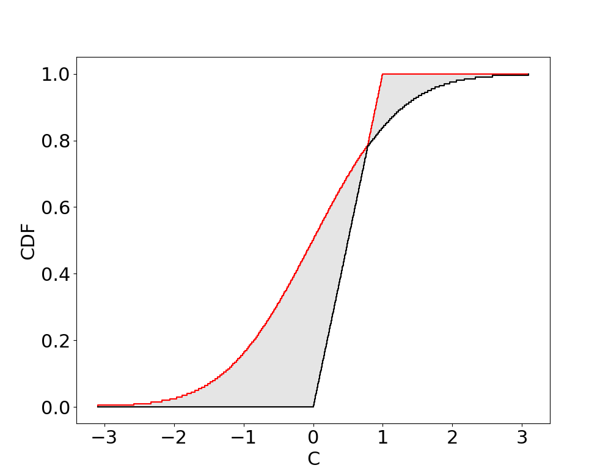
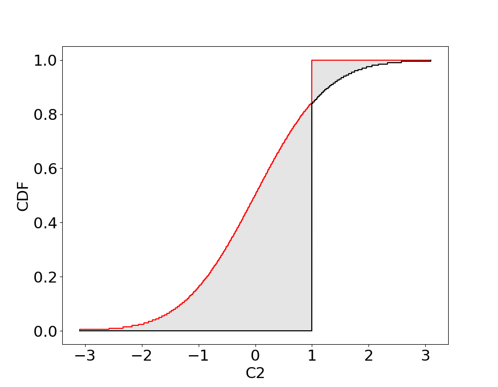
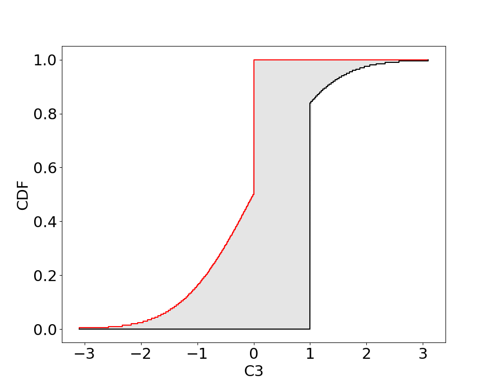

Comparisons and Set based operations
Comparisons
Comparisons (<, >, <=, >=, ==) between p-boxes, intervals and scalars can be performed. However unlike for comparisons between real numbers which yield Boolean values (true or false), comparisons with p-boxes generally yield interval probabilities, giving the uncertainty that the random variable characterised by a p-box meets the condition.
NOTE: unlike IntervalArithmetic.jl, comparisons in ProbabilityBoundsAnalysis.jl will generally give non-Boolean values (interval probabilities). This may cause crashes when evaluating control-flow (if-else) with uncertainty.
Comparisons of p-boxes and scalars
For a p-box X and real number y, X <= y is the evaluation of y in the CDF of X:
Similarly, X >= y is
Example
julia> X = uniform(0, 1)
julia> X <= 0.7
[0.695, 0.705001]
julia> X >= 0.4
[0.594999, 0.605]
julia> X = normal(interval(-0.5, 0.5), interval(1, 1.5))
julia> X >= 1
[0.0649999, 0.37]Boolean values are returned if the condition is guaranteed
julia> X = uniform(0, 1)
julia> X <= 2
true
julia> X >= 2
falseComparisons of p-boxes and intervals
A comparison between a p-box X and an interval Y can be evaluated as follows
where subtraction is evaluated with p-box arithmetic, and then the resulting p-box's CDF is evaluated at 0. I.e., Z = X - Y and then cdf(Z, 0.0). Similarly
Example
julia> X = uniform(0, 1)
julia> Y = interval(0.7, 2)
julia> X <= Y
[0.695, 1]
julia> X >= Y
[0, 0.305]
julia> X <= interval(2, 3)
true
julia> X >= interval(2, 3)
falseComparisons between p-boxes
Comparison between two p-boxes X and Y are performed similarly to intervals
However, for arithmetic operation (subtraction) to be performed exactly, the dependence (copula) between X and Y must be known. The default is Frechet (unknown dependence). Therefore, even if we begin with precise p-boxes (distributions), comparisons will give interval probabilities.
Example
julia> X = uniform(0, 1)
julia> Y = uniform(0.5, 1.5)
julia> X <= Y
[0.5, 1]
julia> X <= uniform(2, 3)
true
julia> X >= uniform(2, 3)
falseThe correlation (e.g. independence) can be specified when performing the comparison (which uses a gaussian copula as default)
julia> X = uniform(0, 1)
julia> Y = uniform(0.5, 1.5)
julia> <=(X,Y, corr = 0)
[0.869999, 0.880001]
julia> >=(X,Y, corr = 0)
[0.119999, 0.130001]
julia> <=(X,Y, corr = 1)
true
julia> <=(X,Y, corr = -1)
[0.744999, 0.755001]
julia> >=(X,Y, corr = 0.5)
[0.04, 0.0550001]Notice that the dependence can greatly change the probability. For example <=(X,Y, corr = 1) gave true (probability 1).
Set based operations
Since p-boxes are a representation of sets of probabilities, set based operations (∩, ∪, ⊂, ⊆) are defined for p-boxes.
Envelopes (hull or union) of p-boxes, intervals, and scalars
Envelopes between p-boxes, intervals and scalars generally yield p-boxes. The following takes the envelope of a uniform and a gaussian
julia> using ProbabilityBoundsAnalysis, PyPlot
julia> a = uniform(0, 1)
julia> b = normal(0, 1)
julia> c = a ∪ b # or env(a, b)
julia> plot(c, fontsize = 22)
The following takes the envelope of an scalar and a gaussian
julia> using ProbabilityBoundsAnalysis, PyPlot
julia> a2 = 1.0
julia> b2 = normal(0, 1)
julia> c2 = a2 ∪ b2 # or env(a2, b2)
julia> plot(c2, fontsize = 22)
The following takes the envelope of an interval and a gaussian
julia> using ProbabilityBoundsAnalysis, PyPlot
julia> a3 = interval(0, 1)
julia> b3 = normal(0, 1)
julia> c3 = a3 ∪ b3 # or env(a3, b3)
julia> plot(c3, fontsize = 22)
Intersection of p-boxes, intervals, and scalars
If non-empty, set intersection can be performed between p-boxes. The following take the intersection between two normal shaped p-boxes N([0, 1.5], [1, 2]) ∩ N([1, 2], 1) -> N([1, 1.5],1)
julia> using ProbabilityBoundsAnalysis, PyPlot, IntervalArithmetic
julia> a = normal(0..1.5, 1..2)
julia> b = normal(1..2, 1)
julia> c = a ∩ b # or imp(a, b)
julia> plot(a, name = "ab", col = "red", fontsize = 22)
julia> plot(b, name = "ab", col = "blue", fontsize = 22)
julia> plot(c, fontsize = 22)